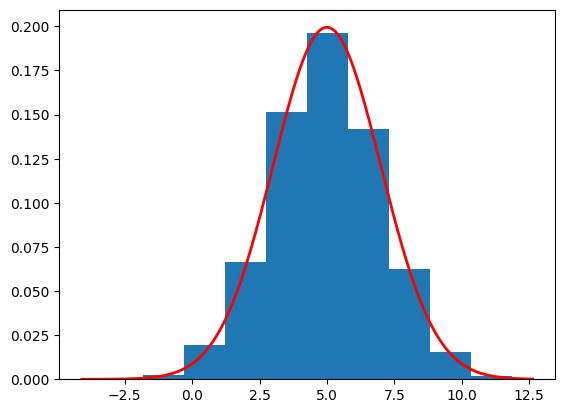

A tutorial to illustrate the connection between DDPM and SDE Diffusion with a toy example.
diffusion
tutorial
Author
Andreas Makris
Published
December 16, 2024
As we know there are two formulations of diffusion models. In this tutorial we show their relationship with a toy example. Diffusion models start from samples from a simple distribution (usually \(\mathcal{N}(0,1)\)) and iteratively transform them to generate samples from a target distribution (in our example \(\mathcal{N}(5,2^2)\)). To do so we often need to train a neural network using samples from the target distribution.
We start with the Markov Chain formulation of the diffusion models, also known as DDPMs. The forward process (data to noise) is:
import torchimport torch.nn as nnfrom torch.utils.data import DataLoaderimport numpy as npimport matplotlib.pyplot as pltclass SimpleNet(nn.Module):def__init__(self, input_dim=2, hidden_dim=128, num_layers=10, time_embedding_dim=128):super(SimpleNet, self).__init__()self.time_embedding = nn.Sequential( nn.Linear(1, time_embedding_dim), nn.ReLU(), nn.Linear(time_embedding_dim, time_embedding_dim), nn.ReLU() ) layers = []self.first_layer = nn.Sequential(nn.Linear(input_dim,hidden_dim), nn.ReLU()) layers.append(nn.ReLU())for _ inrange(num_layers -2): layers.append(nn.Linear(hidden_dim, hidden_dim)) layers.append(nn.ReLU())# Final layer mustn't have an activation layers.append(nn.Linear(hidden_dim, input_dim))self.net = nn.Sequential(*layers)def forward(self, x, t): t = t.unsqueeze(1).float() t_emb =self.time_embedding(t) x =self.first_layer(x) x = x + t_emb out =self.net(x)return outclass DDPM(nn.Module):def__init__(self, num_timesteps, model):super(DDPM, self).__init__()self.num_timesteps = num_timesteps self.model = modelself.beta = torch.linspace(0.0001, 0.02, num_timesteps)self.alpha =1-self.betaself.alpha_bar = torch.cumprod(self.alpha,dim=0)self.sqrt_beta = torch.sqrt(self.beta)self.sqrt_alpha_bar = torch.sqrt(self.alpha_bar)self.sqrt_one_alpha_bar = torch.sqrt(1-self.alpha_bar)self.reverse_factor =1/ torch.sqrt(1-self.beta)self.reverse_factor_2 = torch.sqrt(1-self.alpha_bar)def reverse_diff(self, sample_size):self.model.eval()with torch.inference_mode(): samples = torch.zeros((self.num_timesteps+1, sample_size)) samples[-1] = torch.randn(sample_size)for t inrange(self.num_timesteps-1,-1,-1): t_tensor = torch.ones((1)) * (t+1) noise_hat =self.model(samples[t+1].unsqueeze(1), t_tensor) noise_hat = noise_hat.squeeze(1) exact_sample =self.reverse_factor[t] * (samples[t+1] -self.beta[t] /self.reverse_factor_2[t] * noise_hat)if t !=0: samples[t] = exact_sample +self.sqrt_beta[t] * torch.randn(sample_size)else: samples[t] = exact_samplereturn samplesdef forward(self, x_0): B = x_0.shape[0] t = torch.randint(1, self.num_timesteps+1, (B,)) epsilon = torch.randn((B)) x_t =self.sqrt_alpha_bar[t-1] * x_0 +self.sqrt_one_alpha_bar[t-1] * epsilon x_t = x_t.unsqueeze(1) noise_pred =self.model(x_t, t)return noise_pred, epsilonclass train_ddpm:def__init__(self, diffusion, mean=5, sd=2):self.diffusion = diffusion data = torch.randn(50000) * sd + meanself.train_loader = DataLoader(data, 256)self.optim = torch.optim.AdamW(self.diffusion.model.parameters(), lr=0.001)self.loss = torch.nn.MSELoss()def train(self, epochs):self.diffusion.model.train()for i inrange(epochs):if i%5==0: currect_loss = []for x inself.train_loader:self.optim.zero_grad() noise_pred, noise =self.diffusion(x) noise_pred = noise_pred.squeeze(1) loss =self.loss(noise_pred, noise) loss.backward()self.optim.step()if i%5==0: currect_loss.append(loss.detach().numpy())if i%5==0:print(f"Epoch: {i}/{epochs} Loss: {np.mean(currect_loss):.4f}")model = SimpleNet(input_dim=1)diffusion = DDPM(1000, model)train_class = train_ddpm(diffusion)train_class.train(50)samples = diffusion.reverse_diff(10000).numpy()plot_sample = samples[0]print(f"Estimated mean is {np.mean(plot_sample)}")print(f"Estimated std is {np.std(plot_sample)}")plt.hist(plot_sample, density=True)# Define parameters for the normal distributionmean =5.0std =2.0# Create a range of x valuesxmin, xmax = plt.xlim()x = torch.linspace(xmin, xmax, 200).numpy()# Compute the normal PDF: (1/(σ√(2π))) exp(-(x-μ)²/(2σ²))pdf = (1/(std * np.sqrt(2*np.pi))) * np.exp(-0.5*((x - mean)/std)**2)# Plot the PDF lineplt.plot(x, pdf, 'r', linewidth=2)plt.show()
Epoch: 0/50 Loss: 0.9064
The SDE approach for Diffusion Models starts with a sample \(\boldsymbol{x}(0)\) that propagates through time to evolve to pure noise \(\boldsymbol{x}(1)\) according to the following forward equation: \[d\boldsymbol{x}=\boldsymbol{f}(\boldsymbol{x},t)+g(t)d\boldsymbol{w}\]
There are many possible choices for the functions \(\boldsymbol{f}(\boldsymbol{x},t)\) and \(g(t)\) but to have a discretisation of the SDE to be equivalent to the the limit of the Markov Chain (as \(N \to \infty\)) we need to use the following forward equation:
with \(\beta(t):= \bar{\beta}_{t+\Delta t}:=N\beta_{tN+1}\) at the points of discretisation. \(\Delta t\) is the time between two consectutive points in the discretisation.
The general reverse process to transform pure noise \(\boldsymbol{x}(1)\) to a data sample \(\boldsymbol{x}(0)\) is the following:
where \(\nabla_{\boldsymbol{x}}\log p_t(\boldsymbol{x})\) is known as the score function and for any real world datasets needs to be approximated using a Neural Network. For the particular forward SDE we chose here we have:
Then, we can propagate \(\boldsymbol{x}(0)\) using the Euler-Maruyama method (or any other SDE solver) to obtain \(\boldsymbol{x}(1)\) according to a discritisation with \(N\) discrete steps (same as the Markov Chain). We update the samples every \(\Delta t=\frac{1}{N}\):
where \(\boldsymbol{z}_{t}\) is an isotropic Gaussian random vector. To obtain a sample \(\boldsymbol{x}(0)\) from \(\boldsymbol{x}(1)\) we iteratively update:
import torchimport numpy as npimport matplotlib.pyplot as pltclass SDE_DIFF:def__init__(self, num_timesteps):self.num_timesteps = num_timestepsself.dt =1/num_timestepsself.beta_bar = torch.linspace(0.0001, 0.02, num_timesteps) * num_timesteps # (beta_0,...,beta_{N-1})self.beta_dt =self.beta_bar *self.dtself.sqrt_beta_dt = torch.sqrt(self.beta_dt)self.ddpm_beta = torch.linspace(0.0001, 0.02, num_timesteps)self.alpha = torch.cumprod(1-self.ddpm_beta, dim=0)self.sqrt_alpha = torch.sqrt(self.alpha)def forward_diff(self, x): B = x.shape[0]for t inrange(self.num_timesteps): x = x -0.5*self.beta_dt[t] * x +self.sqrt_beta_dt[t] * torch.randn(B)return xdef reverse_diff(self, num_samples): samples = torch.zeros((self.num_timesteps+1,num_samples)) samples[self.num_timesteps] = torch.randn(num_samples)for t inrange(self.num_timesteps-1,-1,-1): drift =0.5* samples[t+1] +self.score(samples[t+1],t+1) diff =self.sqrt_beta_dt[t] * torch.randn(num_samples) samples[t] = samples[t+1] + drift *self.beta_dt[t] + diffreturn samplesdef score(self,x,t): numerator =5*self.sqrt_alpha[t-1] - x denomenator =3*self.alpha[t-1] +1return numerator / denomenatorsde_diff = SDE_DIFF(1000)samples = sde_diff.reverse_diff(10000).numpy()plot_sample = samples[0]print(f"Estimated mean is {np.mean(plot_sample)}")print(f"Estimated std is {np.std(plot_sample)}")plt.hist(plot_sample, density=True)# Define parameters for the normal distributionmean =5.0std =2.0# Create a range of x valuesxmin, xmax = plt.xlim()x = torch.linspace(xmin, xmax, 200).numpy()# Compute the normal PDF: (1/(σ√(2π))) exp(-(x-μ)²/(2σ²))pdf = (1/(std * np.sqrt(2*np.pi))) * np.exp(-0.5*((x - mean)/std)**2)# Plot the PDF lineplt.plot(x, pdf, 'r', linewidth=2)plt.show()
Estimated mean is 4.95744514465332
Estimated std is 2.0066986083984375

Now how do we use the DDPM formulation of diffusion with the exact score? We can derive the following relationship between the score and the error estimation that the neural network estimates: